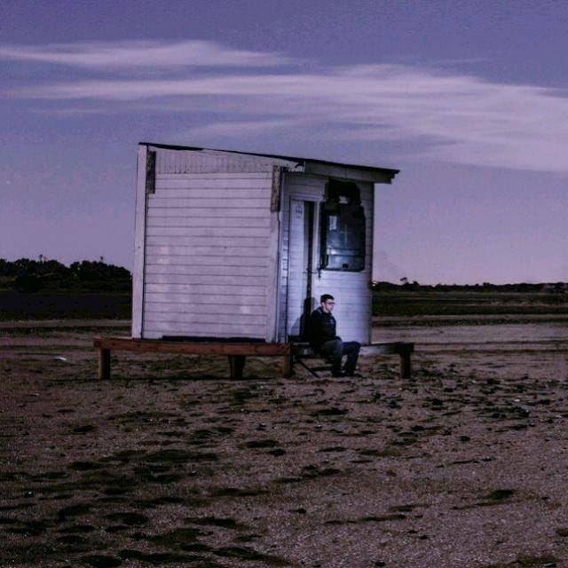
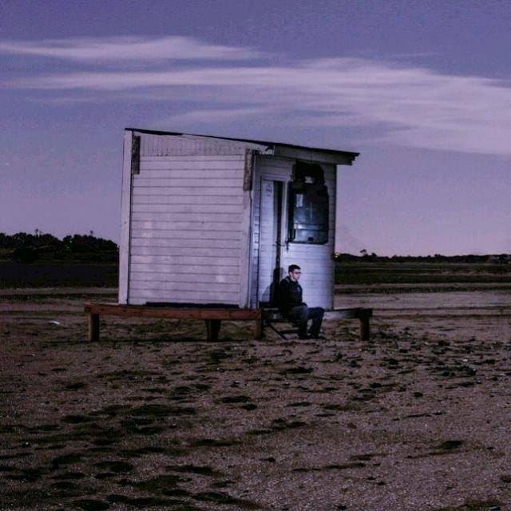

Un poco sobre mi
Me llamo Agustín Gayoso, nací en Viedma el 9 de abril del año 2001. Estoy estudiando la Tecnicatura Universitaria en Desarrollo Web. Mis hobbies son los videojuegos y la Fórmula 1.
Me llamo Agustín Gayoso, nací en Viedma el 9 de abril del año 2001. Estoy estudiando la Tecnicatura Universitaria en Desarrollo Web. Mis hobbies son los videojuegos y la Fórmula 1.
